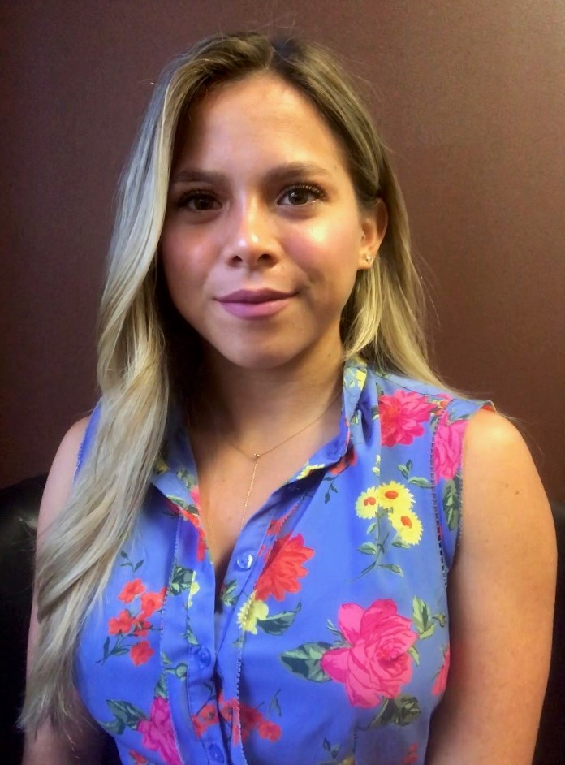

hi! I'm jess. I'm currently a building forensic engineer for a civil engineering firm. I've enjoyed this career for the past few years and studying in this field throughout my undergrad and graduate school was rewarding. But I decided it was time for a change. After much deliberation in regards to my career change, I've decided to pursue web development and computer science.  I'm always eager to learn, research and implement efficient solutions. I strive to provide clients with a quality product that I'm proud of. I'm a problem-solver, who is detail-oriented, organized, and self-sufficient. Project management is a role I enjoy and one I pursue regularly in my current career. I believe in collaboration, and creating a supportive work environment that will allow myself and my peers to succeed.